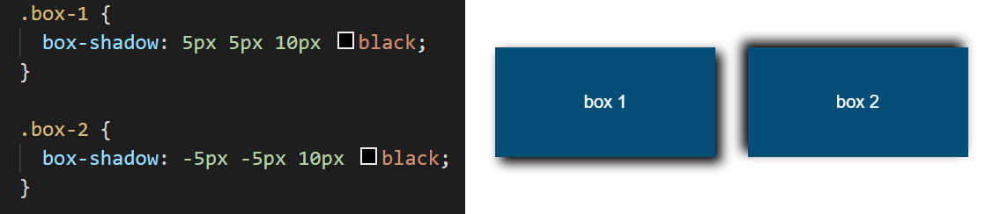
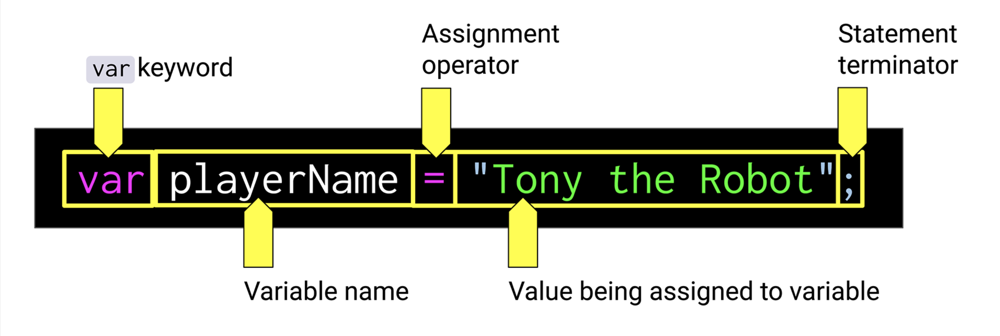

in programming, practice doesn't make perfect—it makes developers
HTML
- the head element contains information about the webpage
- the body element represents the visible content shown to the user
- SVG's or scalable vector graphics are defined as a series of points and lines that are filled with color
CSS
- css enables pages to be adorned with attractive elements
- increasing the appeal of the page, css is capable of making small, aesthetic interactions
- placing two css links will have the html with both stylesheets are read in consecutive order
- margin indicates how much space we want around the outside of an element.
- borders can be transparent or solid color: 2px solid #cc0000=2px wide,solid red border
- padding indicates how much space we want around the content inside an element
- difference between block & inline:
- here is the difference between static postioning vs. relative to the parent element:
- to position a child element in relation to its parent element, set the [ position: value; ] to absolute
- box-sizing is a property that changes the calculation of both width and height of an element
- [ position: static; ] is the default value and maintains the order of the natural flow of the elements on the page (i.e. the order created in the html) and not affected by the top, bottom, left, and right properties
- [ position: relative; ] uses the top and bottom properties to vertically offset and the left and right properties to hroizontally offset the element from the static position
- [ position: absolute; ] removes the element from the natural flow of the page aelements and uses the top, bottom, left, and right properties to offset relative to the element's parent, or containing, element's margins
- breakdown of media query syntax:
- three types of media can be applied to the css:
- screen: applies the rule only to digital screens and devices
- speech: applies to how screen readers can interpret element's styles (this can even be used to change the voice a screen reader uses, but it is a good practice to keep the default screen reader voice as site visitors using it will be acclimated to its speech patterns)
- print: applies the rule only when the page is printed or displayed in print preview.
- box-shadows & adding transparency : 
- there are a few value possibilities for shadows, but the most common usage is to define the horizontal offset (5px in the example), vertical offset (10px), radius of the shadow blur (15px), and finally the color. The offsets start in the top-left corner of the shadowed element, and these numbers can be negative.
- in order to add transparency, you have to utilize RGB values. RGB is are the primary colors for light, and in css, we can define how much the three colors blend together on a scale of 0-255 (all 0's = black, all 255's = white)


* .some-class { text-shadow: 5px 10px 15px black; box-shadow: 5px 10px 15px rgba(0, 0, 0, 0.25); }
Git
- git status checks what branch you're on
- git checkout -b branch-name: creates a new branch and switches it
- git checkout main returns you to main branch
- difference between [git fetch] , [git merge] , and [git pull] :

JavaScript
- javascript adds interactivity to the app as well as save crucial information between browser visits
- A variable is a named container that allows us to store data in our code.
- Control flow is the order in which a computer executes code in a script.
- (===) is the strict equality operator which checks to see if two values are equal, and returns a Boolean result of 'true' if they are equal and 'false' if they are not equal:
- to create a for loop you will need to follow 3 important statements:
- var x = 0; this will be the starting point, declaring a variable and giving it the value of 0 [bc the first index of an array is always 0]
- x < name.length; this will be the condition, and the 'length' will run through each index so long as the variable x is less than the length of the array
- x++ : this will be the final statment, which is a shortcut way of writing x+1, meaning every time the code loops, x will increase by 1
- for loop application will look something like this: for(var x = 0; x < shapes.length; x++), with a code block in curly brackets after
- a function is a predefined action that can be called or invoked in a code
- to run a JavaScript function, parentheses must be included—even if there's nothing between them
- placing content between the parentheses is called passing an argument into a function
- a semicolon ; closes out the function's code - the semicolon tells the browser that this particular line is completed and any code after it is a new piece of code - each piece of code, separated by semicolons, is known as an expression
- example of a function syntax (from robot gladiators):
- functions can be named anything, but best practice is to name them for their functionality; for example, the function() name: fight
- fight function doesn't need data passed into it the same way that the alert does, but the parentheses are required regardless.
- curly braces { } wrap the code that belongs to this function
- the function will run any code within the braces, and it won't run any code outside them
- the code between these curly braces is called a code block - a function must be called in order to work; in this case: [ fight(); ] will call out the window alert message
- objects, methods, and APIs
-
[ window ] is a collection of functions and many other properties built natively into the browser
- when a program is openned in the browswer, the javascript file's code executes in the context of the [ window ]
- that way, the code can always acces the tools and information (called "properties") the [ window ] provides -
a collection of functionality and data that's accessed through one "name" (for example, window) is an object
- to access an object's data, the object is named, followed by a period along with the property name or function name
- using a period between the object name and property is called dot notation - when a function belongs to an object, it is called a method
- a functionality built into browsers where properties can be accessed is called a web application programming interface (API)
- a variable is a named location for a value that gets stored in the browser's memory when a program is run 
- variable playerName is declared and
assigned the value "Tony the Robot" - [ var ] keyword: just like [ function ],[ var ] is a keyword built into the JavaScript language
- whenever it is used, it tells the program to create a new variable and the next word is going to be the name of the variable - variable name: this is the actual name that will store the information assigned to the variable
- when the browser reads the line, it will store the name to recall it later in the program - use camelCasing for names with more than one word
- assignment operator: the assignment operator (=) is a single equal sign that is used to set the value to a variable name
- the crucial tool that allows developers to test code without interrupting the page with an alertis called the developer console


// This is a String data type; it must be wrapped in double quotes (" ") or single quotes (' ').
var stringDataType = "This is a string, which is a fancy way to say text";
// This is a Number data type; it can be an integer (whole number) or have decimals (floated numbers).
var numberIntegerDataType = 10;
var numberFloatDataType = 10.4;
// This is a Boolean data type, which can only be given a value of true or false.
var booleanDataType = true;